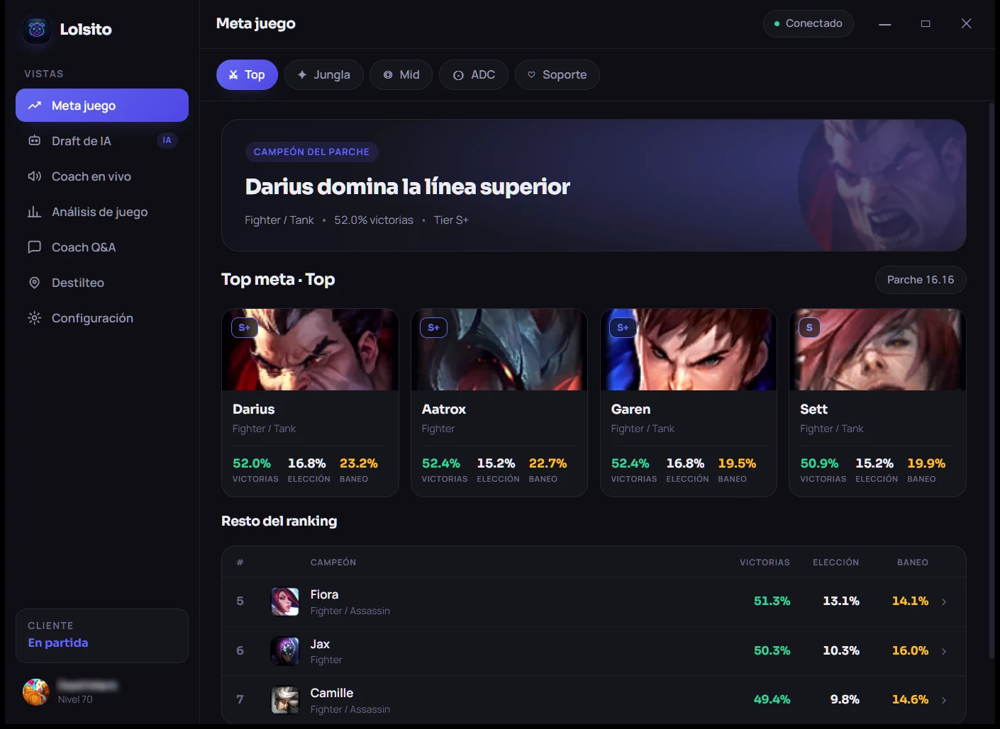
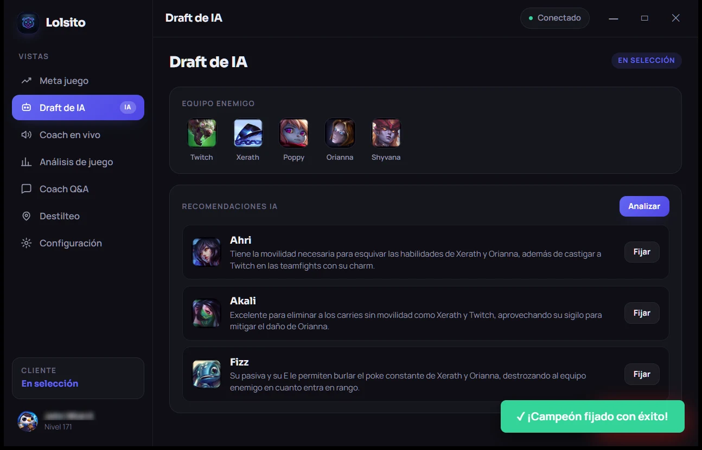
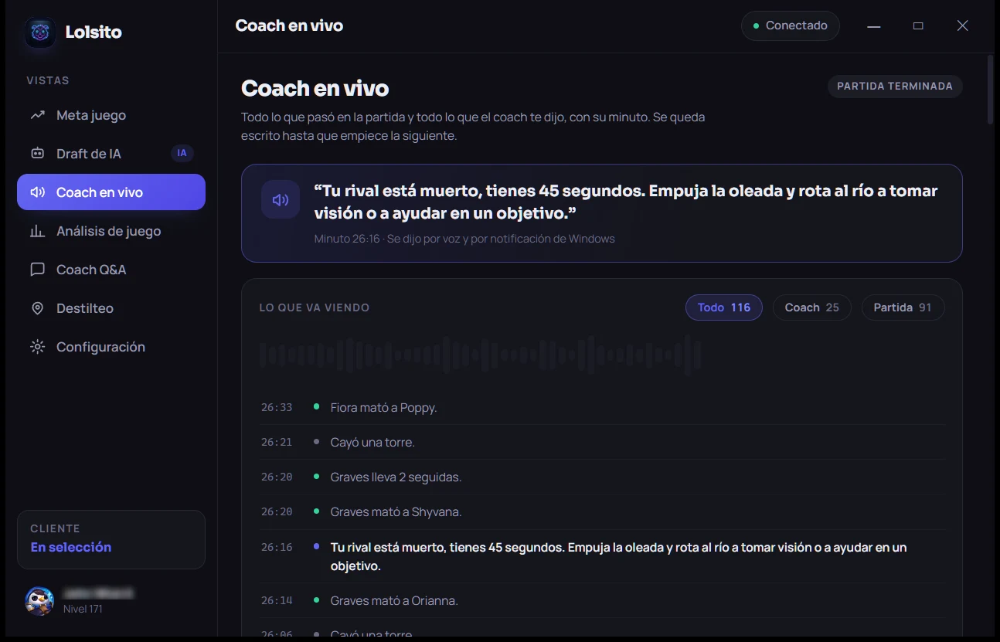
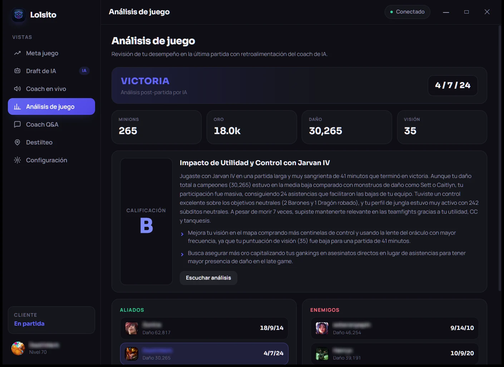
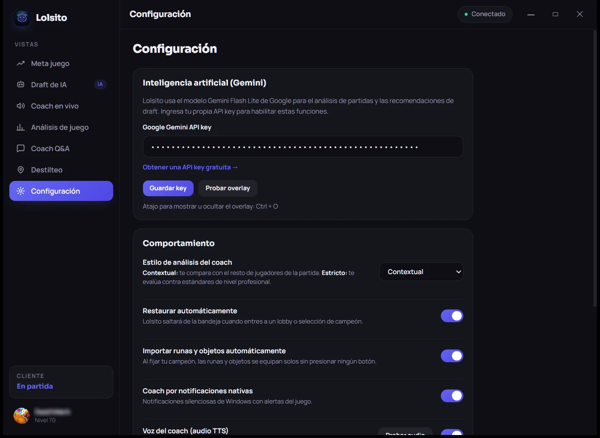

Entra a Google AI Studio
Con tu cuenta de Google, la misma del correo. No piden tarjeta.
Abrir ↗Para League of Legends
Alguien que sí sabe, viéndote jugar.
No es una guía.
Es un coach dentro de tu computadora.
01
02





Quién está roto este parche, rol por rol, antes de que entres a la fila.
Ve a los cinco de enfrente y te dice a quién escoger, con el porqué de cada uno.
Te habla en español mientras juegas y deja escrito todo lo que pasó, con su minuto.
Al terminar te califica y te dice en qué la regaste, con tus números en la mano.
Lo único que configuras: pegas tu llave de Gemini y ya. Nada más.
Lo único que te pide
Lolsito no trae llave propia: usas la tuya y se queda guardada nada más en tu computadora.
Con tu cuenta de Google, la misma del correo. No piden tarjeta.
Abrir ↗Si es tu primera vez te pide aceptar los términos. Acepta y vuelve a presionarlo.
Si no tienes ninguno, deja que Google cree uno nuevo. El nombre da igual.
Es un texto largo que empieza con AIza. Cópialo completo: al cerrar la ventana ya no lo vuelves a ver.
Configuración, campo "Google Gemini API key", Guardar. Ya está: la IA responde.
Lolsito es un proyecto de fan y no está avalado por Riot Games. League of Legends y todo su arte son marcas registradas de Riot Games, Inc.